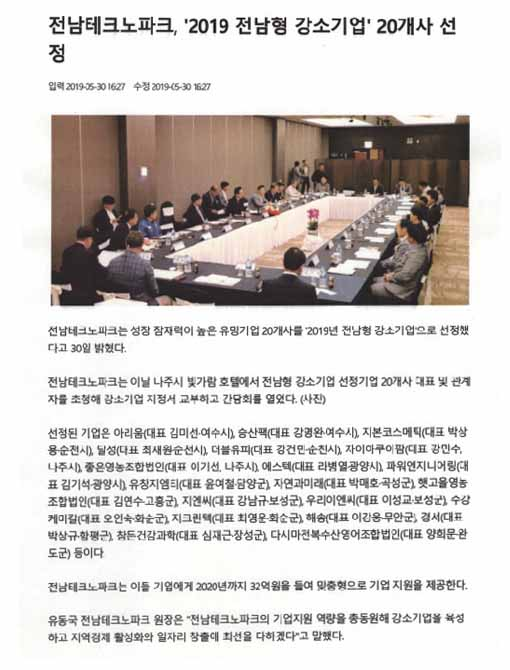

일본 양식 관계자들 자이아쿠아팜에 방문 순환여과식 시스템 견학(2017.4)
- 자이아쿠아팜 시스템과 친환경 장어구입
(일본양식신문 2017년 4월 방문)
일본 양식 관계자들 자이아쿠아팜에 방문 순환여과식 시스템 견학(2017.4)
- 자이아쿠아팜 시스템과 친환경 장어구입
(일본양식신문 2017년 4월 방문)
한국 양식 기술이 일본을 5년 앞선다(2018.5.3. YTN 뉴스)
자이아쿠아팜 2013년부터 대체사료 연구(농업기술원 박관호 박사에게 동애등에 기술을
전수 받아 유충을 키워 장어사료로 실험) - 실험결과 10% 이상의 효율증대 향후 수직적 확장의 중요 성장 포인트 마련
(동애등에 관련 뉴스웨이 기사 2016.8.23)